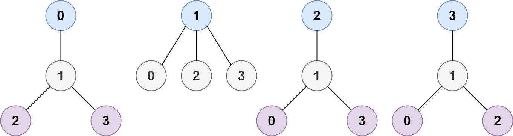

310. 最小高度树
拓扑剥叶：每轮剥掉所有度为 1 的叶子，最后剩下 1~2 个结点就是最小高度树的根。
思路
- 直觉：叶子一层层向内剥，树向「中心」收缩；放在正中的根让两边最长链最平衡，所以最后剩的 1~2 个就是答案。
- 建邻接表记度数；度为
≤ 1的先入叶子列表，每轮把叶子的邻居度数减一，减到 1 的成为新一轮叶子。 remain > 2才继续剥；剩 1~2 个时停止（n=1直接返回[0]）。
图解
最优解
1import java.util.*;2 3class Solution {4 public List<Integer> findMinHeightTrees(int n, int[][] edges) {5 if (n == 1) return List.of(0); // 单结点：自己就是根6 List<Integer>[] adj = new List[n];7 int[] deg = new int[n];8 Arrays.setAll(adj, k -> new ArrayList<>());9 for (int[] e : edges) {10 adj[e[0]].add(e[1]);11 adj[e[1]].add(e[0]);12 deg[e[0]]++;13 deg[e[1]]++;14 }15 List<Integer> leaves = new ArrayList<>();16 for (int i = 0; i < n; i++) if (deg[i] <= 1) leaves.add(i);17 int remain = n;18 while (remain > 2) { // 一层层向内剥，最后剩下的 1~2 个就是中心19 remain -= leaves.size();20 List<Integer> next = new ArrayList<>();21 for (int u : leaves) {22 for (int v : adj[u]) {23 if (--deg[v] == 1) next.add(v); // 邻居减到 1 就成了新叶子24 }25 }26 leaves = next;27 }28 return leaves;29 }30}题目
树是一个无向图，其中任何两个顶点只通过一条路径连接。 换句话说，任何一个没有简单环路的连通图都是一棵树。
给你一棵包含 n 个节点的树，标记为 0 到 n - 1 。给定数字 n 和一个有 n - 1 条无向边的 edges 列表（每一个边都是一对标签），其中 edges[i] = [ai, bi] 表示树中节点 ai 和 bi 之间存在一条无向边。
可选择树中任何一个节点作为根。当选择节点 x 作为根节点时，设结果树的高度为 h 。在所有可能的树中，具有最小高度的树（即，min(h)）被称为 最小高度树 。
请你找到所有的 最小高度树 并按 任意顺序 返回它们的根节点标签列表。
树的 高度 是指根节点和叶子节点之间最长向下路径上边的数量。示例 1：

输入：n = 4, edges = [[1,0],[1,2],[1,3]] 输出：[1] 解释：如图所示，当根是标签为 1 的节点时，树的高度是 1 ，这是唯一的最小高度树。
示例 2：

输入：n = 6, edges = [[3,0],[3,1],[3,2],[3,4],[5,4]] 输出：[3,4]
提示：
1 <= n <= 2 * 104edges.length == n - 10 <= ai, bi < nai != bi- 所有
(ai, bi)互不相同 - 给定的输入 保证 是一棵树，并且 不会有重复的边
题面取自力扣当前版本。
数据快照 2026-11-04。题面版权归力扣所有，本站点仅供本人学习使用，请勿对外发布。